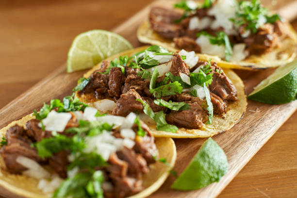

Tacos

Tacos are a traditional mexican dish that consists of a torilla with a different variety of meats and or vegetables
It is the most representative snack of Mexican cuisine and can be found in all parts of the republic and in Mexican restaurants throughout the world.
Ingredients
- tortilla
- suadero
- sauce(green or red)
- onions
- cilantro
Steps
- Cook the suadero until is ready
- warm up the tortillas
- dice the onions
- put the suadero inside the tortilla
- top it off with the onions, cilantro and sauce and enjoy